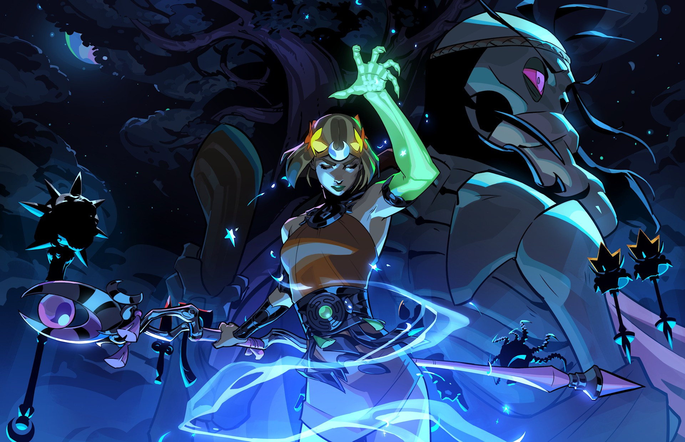
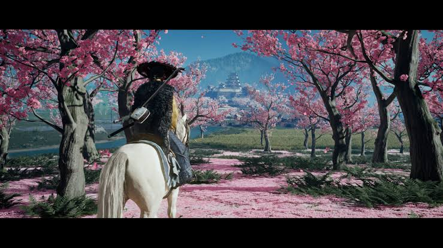
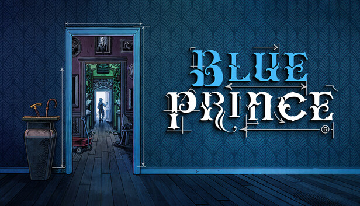
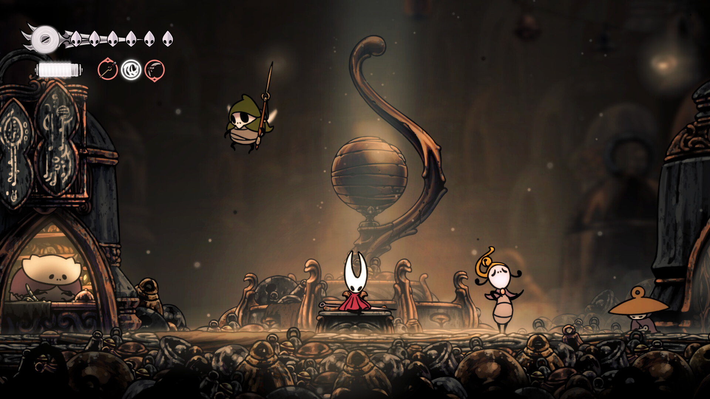
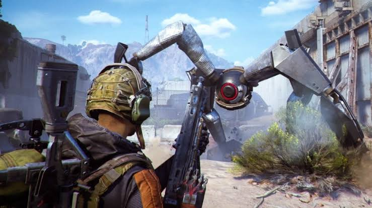
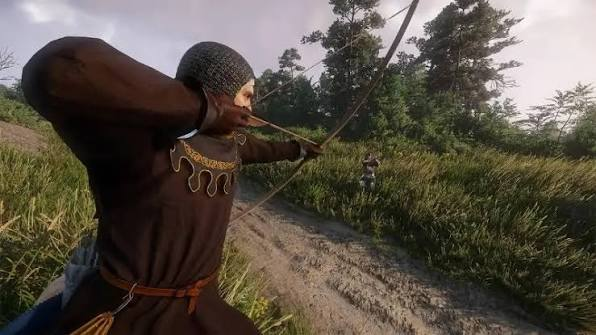
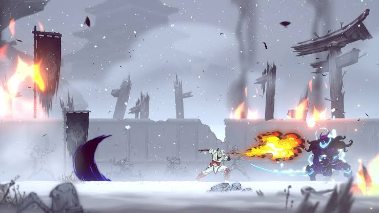
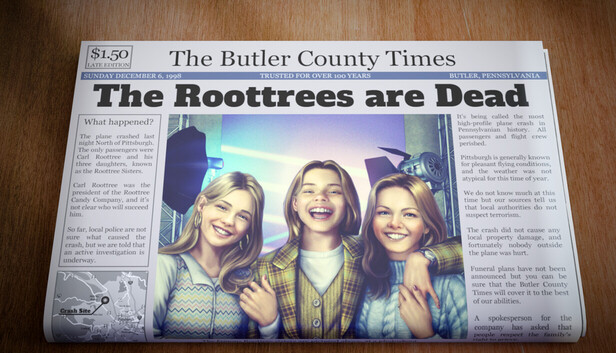
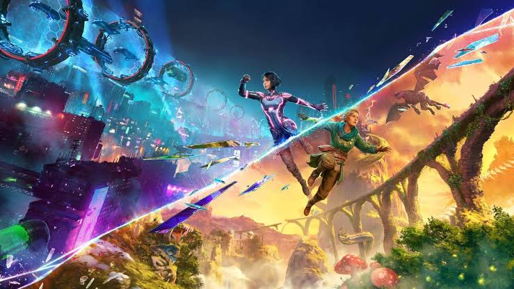

Hot games of 2025
About
In 2025 wasn't just a year of breathtaking graphics; it was a year of unforgettable stories. From heartbreaking tales of survival in desolate wastelands to epic journeys of vengeance in ancient realms, gaming narratives have never been more profound. Prepare to embark on the most captivating adventures as we unveil the top 10 games of 2025.
The top 10 games of 2025
- Jump to #1
- Jump to #2
- Jump to #3
- Jump to #4
- Jump to #5
- Jump to #6
- Jump to #7
- Jump to #8
- Jump to #9
- Jump to #10
- Clair Obscur: Expedition 33

- Hades II

- Ghost of Yōtei

- Blue Prince

- Hollow Knight: Silksong

- Arc Raiders

- Kingdom Come: Deliverance II

- Shinobi: Art of Vengeance

- The Roottrees Are Dead

- Split Fiction
